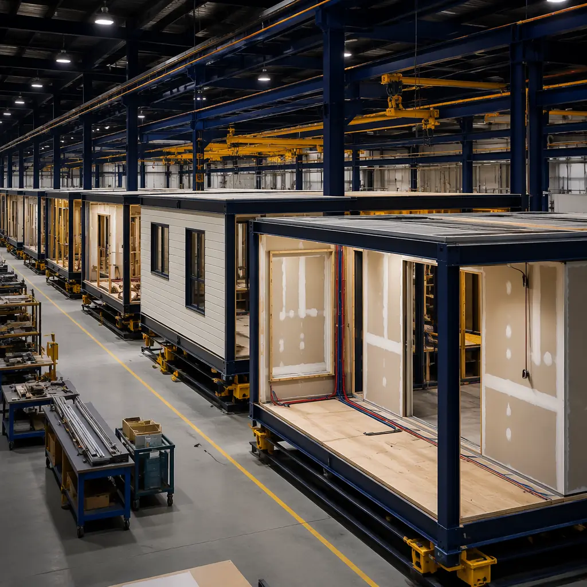
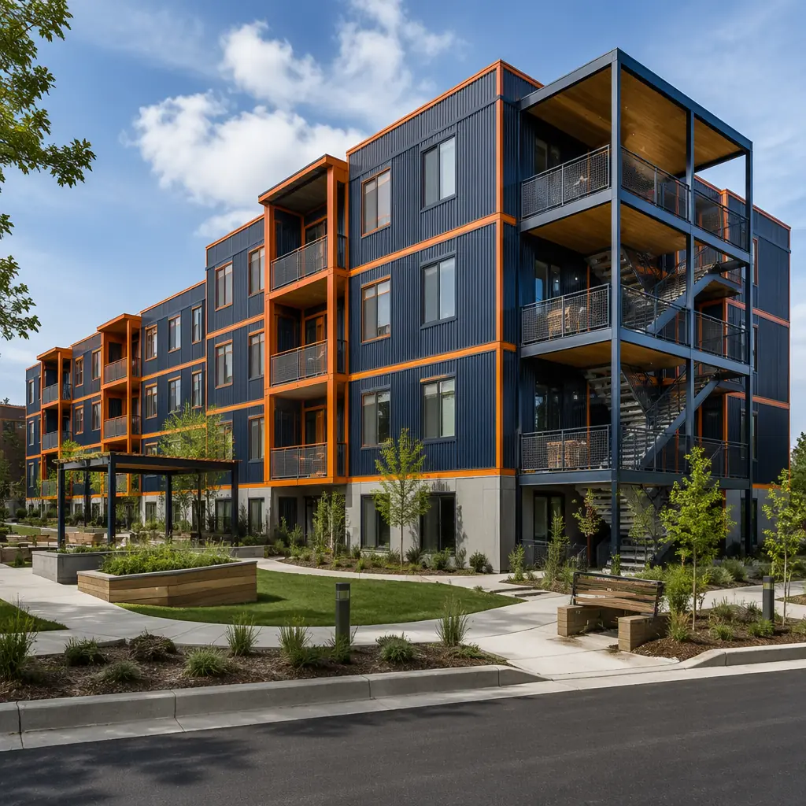
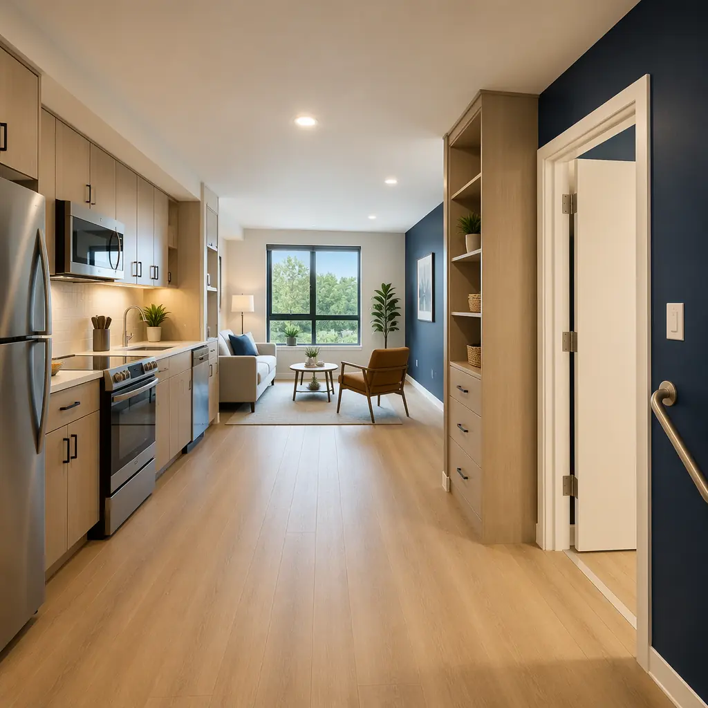

The global affordable housing deficit stands at 330 million urban households and growing by 4–5 million per year. Traditional construction cannot close this gap: it is too slow, too expensive, and too dependent on skilled labor that is in critically short supply in every developed economy. Municipal housing authorities, national housing agencies, and non-profit developers are increasingly turning to modular construction as the delivery mechanism that can produce quality affordable housing at the speed and volume the crisis demands. This article examines how modular construction reduces affordable housing costs by 15–25%, compresses project timelines by 30–40%, and aligns with the government funding programs that are reshaping social housing procurement in the UK, Canada, Australia, and the United States.

The Affordable Housing Delivery Problem — Why Traditional Construction Fails
Affordable housing projects face a specific set of constraints that conventional construction handles poorly:
Fixed budgets with no contingency margin. A market-rate condominium developer can absorb a 10% cost overrun by increasing unit prices. An affordable housing developer working within a government grant program has a hard cap: the per-unit funding is fixed, and every dollar of construction cost overrun must be absorbed by reducing unit count, cutting material specifications, or eliminating community amenities. Modular construction reduces cost uncertainty by moving 60–80% of the construction budget into a factory environment where labor productivity, material waste, and quality are controlled and predictable. Our cost per square foot guide provides detailed benchmarks across building types.
Political pressure for visible progress. Affordable housing projects funded by public money face constant scrutiny: city council members need to show their constituents that the promised 200 units are actually being built. A conventional 24-month construction timeline with 16 months of visible inactivity (foundation and structure work that looks like "a hole in the ground") is politically toxic. Modular construction compresses the site activity to 8–12 months, with visible modules arriving and stacking within 60–90 days of foundation completion. The political optics of "modules arriving on trucks and a building appearing in weeks" align with the accountability demands of publicly funded projects.
Community disruption during construction. Affordable housing projects are frequently built on infill sites in established neighborhoods, where 24 months of construction noise, dust, truck traffic, and street closures generate community opposition that delays permitting and drives up costs. Modular construction reduces on-site construction activity by 60–70% compared to conventional methods: less concrete pouring, less steel erection, less material delivery, fewer worker trips. The modules arrive substantially complete, minimizing the disruption window and reducing the community relations risk for the developer and the funding agency.

Cost Structure — Per-Unit Benchmarks for Modular Affordable Housing
The economic model for modular affordable housing depends on unit type, building height, and local labor rates, but consistent benchmarks have emerged from projects in the UK, Canada, and Australia:
Low-rise walk-up apartments (2–4 stories). Modular construction in this category delivers all-in hard costs of $180–$230 per square foot, or $150,000–$200,000 per 800 sq ft two-bedroom unit (2026 North American pricing). This compares to $200–$260 per square foot for conventional wood-frame or light-gauge steel construction in the same category. The 15–20% cost advantage comes primarily from factory labor productivity (3–4x site labor productivity for MEP rough-in and drywall), reduced material waste (factory waste rates of 2–4% versus site waste rates of 12–18%), and compressed general conditions (8 months of site supervision and temporary facilities versus 14 months).
Mid-rise elevator buildings (5–8 stories). At this height, modular construction costs $210–$270 per square foot, roughly at parity with conventional construction ($215–$275/sq ft). The cost advantage shifts from hard-cost savings to schedule savings: modular delivers the project in 14–18 months versus 22–28 months for conventional, reducing construction loan interest, accelerating rent commencement, and shortening the developer's pre-revenue period. For a 60-unit affordable housing project at $15 million total development cost, 10 months of earlier rent commencement at $1,200/month/unit generates $720,000 in additional revenue that directly offsets financing costs.
Stacked townhouse configurations. Two-story modules stacked into 4-story townhouse blocks are particularly well-suited to modular affordable housing. Each module contains two floors of a single townhouse unit (ground floor living/kitchen, upper floor bedrooms), and units are stacked side-by-side in blocks of 4–8. All-in costs run $160–$200 per square foot — the lowest cost per square foot of any modular building type — because the modules require no vertical stacking of structural loads beyond two stories, eliminating the heavy steel frame and complex connection systems required for taller modular buildings.
Government Funding Programs That Favor Modular
Government affordable housing programs are increasingly structured with criteria that modular construction satisfies more readily than conventional methods. Developers who understand these program requirements can build a stronger funding application by demonstrating how modular delivery aligns with program goals.
UK: Affordable Homes Programme 2021–2026. Homes England's £11.5 billion program includes explicit preference for Modern Methods of Construction (MMC), with a target of 25% of funded units using MMC by 2025. Modular construction qualifies as MMC Category 1 (volumetric systems), the highest category. Projects using modular construction receive priority scoring in funding rounds and may qualify for additional grant funding through the MMC-specific allocation. Key requirement: units must meet the Nationally Described Space Standard (NDSS) minimum floor areas, which modular modules are designed to exceed by 5–10% to provide layout flexibility.
Canada: National Housing Strategy — Rapid Housing Initiative. The RHI's $4 billion allocation (2020–2026) specifically targets "rapid creation of permanent affordable housing," with projects required to achieve occupancy within 12–18 months of funding approval. This timeline is practically unachievable with conventional construction for multi-unit projects, making modular construction the default delivery method for RHI-funded projects. The program's Cities Stream and Projects Stream both accept modular construction proposals, and CMHC has published specific guidance on modular construction underwriting requirements including factory inspection protocols and module transportation bonding.
Australia: National Housing Accord — Housing Australia Future Fund. The $10 billion HAFF aims to deliver 30,000 social and affordable homes over five years (2024–2029). The program's emphasis on "innovative construction methods that reduce delivery time and cost" explicitly favors modular construction. State-level programs in Victoria (Big Housing Build, $5.3 billion) and Queensland (Housing Investment Fund, $2 billion) include modular-specific procurement frameworks with pre-qualified modular manufacturer panels. Developers accessing HAFF funding should note that modular projects must demonstrate compliance with the National Construction Code (NCC) Volume One for Class 2 buildings, achieved through factory quality control documentation and third-party structural engineering certification.

Design Standards for Social Housing — What Modular Delivers
Affordable housing has specific design requirements that go beyond market-rate residential standards. Modular construction's factory-controlled environment is well-suited to meeting these requirements consistently across hundreds of units:
Accessibility compliance at scale. Government-funded affordable housing typically requires 10–20% of units to meet full accessibility standards (wheelchair turning circles, roll-in showers, accessible kitchen counters) and 100% of units to meet visitability standards (zero-step entrance, wide doorways on ground floor). In modular construction, accessible units are built as dedicated module types with accessibility features factory-installed and quality-checked: 1,500 mm turning circles verified by laser measurement, grab bar backing installed behind drywall per dimensioned drawings, roll-in shower pans set and waterproofed in the factory. This factory approach eliminates the "accessibility retrofit" problem that plagues conventional construction, where standard units are framed and then must be demolished and rebuilt when the accessibility requirements are belatedly enforced.
Energy performance for low operating costs. Affordable housing tenants are disproportionately affected by high utility bills. Passive House (Passivhaus) certification — achieving space heating demand below 15 kWh/m²/year — is increasingly specified in government affordable housing RFPs in British Columbia, New York, and Scotland. Modular construction achieves Passive House performance more reliably than site-built construction because the continuous insulation, airtightness membrane, and thermal-bridge-free details are installed under factory quality control with blower-door testing at the module level before modules leave the factory. Our energy efficiency analysis documents how modular construction reduces operating costs by 30–50% compared to code-minimum construction.
Acoustic separation between units. Multi-family affordable housing projects face strict acoustic requirements under building codes (typically STC 50 minimum for demising walls, IIC 50 for floor/ceiling assemblies). Modular construction achieves these requirements through the double-wall, double-floor assembly inherent in module construction: each module has its own wall and floor, and when two modules are placed adjacent, a 50–100 mm air gap exists between the two assemblies, effectively decoupling them acoustically. Combined with mineral wool cavity insulation and resilient channel on the interior faces, modular demising walls routinely achieve STC 55–60 — well above code minimums — without the additional cost and field-verification uncertainty of site-built acoustic assemblies.
Case Study: Modular Social Housing at Scale
Y:Cube, London (36 units, 2015). Developed by the YMCA in partnership with Rogers Stirk Harbour + Partners, this pioneering modular affordable housing project delivered 36 self-contained studio units in Mitcham, South London, at a construction cost of £35,000 per unit (2015 pricing) — approximately 40% below conventional construction costs for equivalent social housing. Each 26 m² unit was manufactured as a single module with factory-installed kitchen, bathroom, and built-in furniture. Units were stacked and connected on site in 5 weeks. The project demonstrated that modular construction could deliver genuinely affordable housing — the units rent at 65% of market rate — and has been replicated in five additional YMCA sites across London.
Vancouver Temporary Modular Housing (606 units, 2018–2020). The City of Vancouver procured 606 modular supportive housing units across 10 sites in response to a homelessness emergency. Each project delivered 39–78 units of self-contained studio apartments with support services on the ground floor, at a construction cost of CAD $230,000–$250,000 per unit including site works and foundations. Projects achieved occupancy in 4–6 months from site possession — compared to 18–24 months for conventional construction. All 10 projects remain in operation, with tenant satisfaction surveys showing 85%+ positive ratings. The program has been expanded to an additional 7 sites in the Metro Vancouver region.
Nightingale Modular, Melbourne (20 units, under construction 2026). An affordable housing pilot project delivering 20 one- and two-bedroom units across 5 stories using cross-laminated timber (CLT) modular construction. The project targets a construction cost of AUD $3,800/m² ($353/sq ft), approximately 18% below the Melbourne multi-residential benchmark, and a 9-month construction timeline. The developer, Nightingale Housing, selected modular CLT construction specifically to reduce embodied carbon (CLT modules sequester approximately 25 tonnes of CO2 per unit) while meeting the affordability targets required for the project's community housing provider partner.

Developer's Checklist — Preparing an Affordable Housing Modular RFP
For housing authorities and non-profit developers new to modular procurement, the following framework ensures that the RFP captures the requirements that matter for affordable housing delivery:
- Factory pre-qualification. Require ISO 9001 quality management certification, third-party factory inspection reports from an accredited building envelope consultant, and a reference list of at least three completed multi-family modular projects with occupancy permits. Do not accept "modular experience" without specific multi-family residential project references.
- Unit type schedule with repetition targets. Specify the target number of unit types (ideally 3–5) and the acceptable range of variation per type. The RFP should require the modular manufacturer to demonstrate how their module design achieves the required unit mix within the repetition constraint.
- Accessibility module specification. Require a separate accessibility module type with all accessible features factory-installed, not field-retrofitted. The RFP should specify the accessibility standard (e.g., UFAS, CSA B651, AS 1428.1) and require factory-quality verification documentation for every accessible module produced.
- Energy performance guarantee. Require module-level blower-door testing results before modules leave the factory (targets: 0.6 ACH at 50 Pa for Passive House, 1.5 ACH for code-minimum). The contract should include a performance bond or retention provision tied to achieving the specified airtightness and thermal performance targets in the completed building.
- Transportation and installation plan. Require a detailed logistics plan covering module transport routing (bridge clearances, weight restrictions), crane specification and positioning, module laydown and just-in-time delivery schedule, and weather protection for modules during installation. Our transport logistics guide covers module shipping requirements internationally.
- Warranty structure. Require a 10-year structural warranty on the module frames, a 5-year warranty on factory-installed MEP systems and finishes, and a 2-year defects liability period covering all module components. Our warranties guide details standard modular construction warranty terms.
The Policy Window — Acting Before Funding Cycles Close
The current policy environment is exceptionally favorable to modular affordable housing delivery. The UK's Affordable Homes Programme runs through 2026, with MMC-specific funding likely to be extended in the next spending review. Canada's Housing Accelerator Fund has $4 billion allocated through 2026–2027. Australia's HAFF is ramping up its first round of project approvals through 2027. In the United States, the Low-Income Housing Tax Credit (LIHTC) program provides $12 billion annually in tax credit allocations, and several states (California, Colorado, Massachusetts) have introduced modular-specific scoring preferences in their Qualified Allocation Plans (QAPs).
For housing authorities and developers, the window for accessing these programs with modular construction proposals is the next 18–36 months. After that, program funding levels and modular-specific preferences may change. The projects that secure funding in the current cycle will set the benchmark for modular affordable housing delivery in the next decade — and the developers who build modular delivery capability now will have a structural cost and speed advantage when the next wave of affordable housing funding is announced.